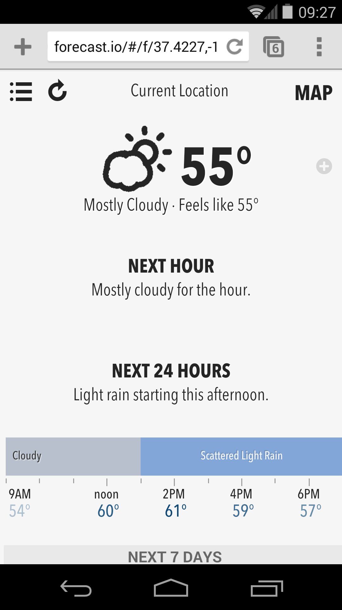
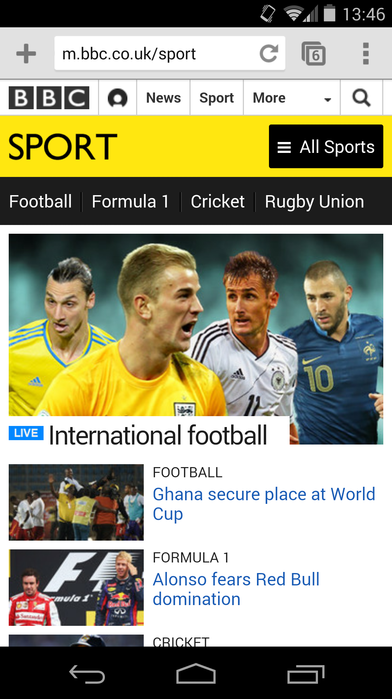
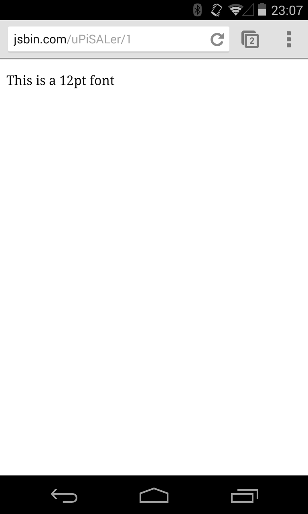
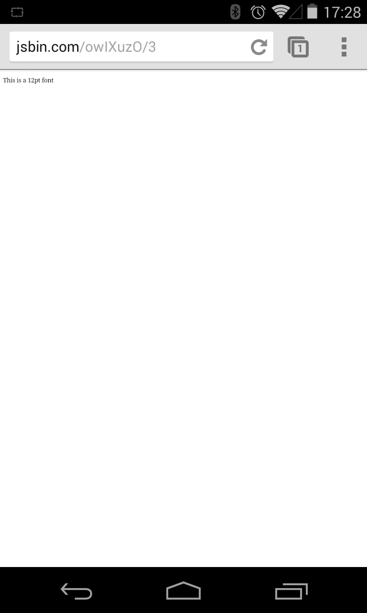
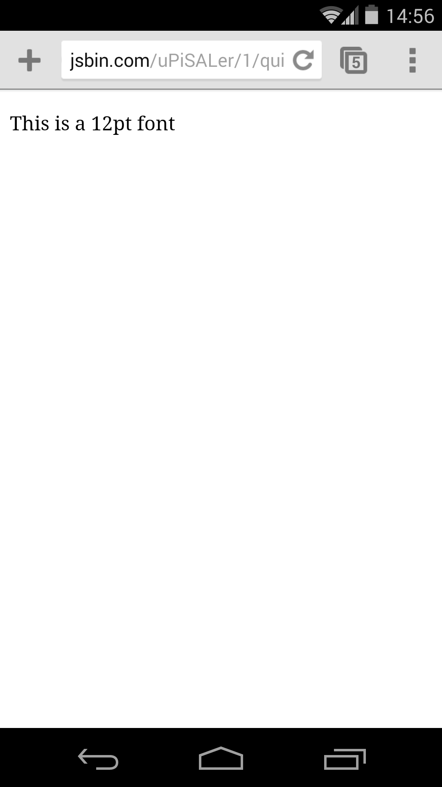
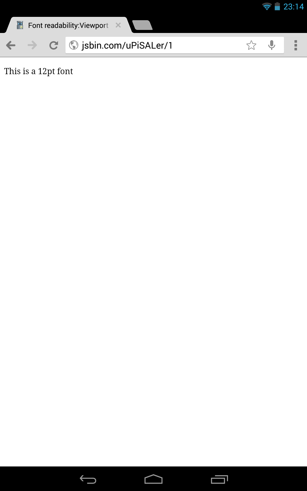

Paul Kinlan

Twitter: @paul_kinlan
Blog: paul.kinlan.me
Why Mobile Web UX at a dev conference?
Mobile is Huge
TODO: better image
Some leading examples


But...
53% had a desktop experience
25% didn’t fit in on screen

83% have hard to touch tap targets
60% have text readability issues

10% used Plugins
We are building a tool to help!
PageSpeed Insights for UX
- Checks viewport configuration
- Determines if text is legible
- Finds un-tappable touch targets
- Identifies usage of legacy plugins
Mobile Web UX building blocks
Picture: Eran Sandler - http://www.flickr.com/photos/51385424@N00/2253657555
- Display
- Interactions
Display
Always use a viewport
The most critical element for mobile!
<meta name="viewport" content="width=device-width" />
<meta name="viewport" content="initial-scale=1.0" />
- Set width=device-width
- Use a fixed viewport
Demo: goo.gl/j9KLT


Nexus 4 - 39%
12pt font reads like a 5pt font.

Nexus 5 - 37%
12pt font reads like a 4pt font

Nexus 7 - 61%
12pt font reads like a 7pt font.
Nexus 10 - 82%
12pt font reads like a 9pt font
It's all a lie
Browsers use "Text Autosize"
It ruins your designs
- Use a viewport
- Try to size the page > 100,000 px
Fit content in viewport
- It drives users crazy
- Some platforms have scroll lock
Who has a 24 inch phone?
Media Queries
Adaptive to screen size
@media screen and (min-width: 800px) { ... }
@media screen and (device-aspect-ratio: 16/9) { ... }
@media screen and (resolution: 2dppx) { ... }
Adaptive to orientation
@media screen and (orientation: portrait) { ... }
HTML5Rocks redesign
From 17 media queries to 4


Size to content not to device
Less maintenance
- Size to devices
- Size to content
Font readability
If users can’t read the words in your app, it doesn’t matter how beautiful the typography is— Apple
- Minimum 12pt == 1 em == 16 px
- Increase contrast
- Maintain good line height
Limit use of Web Fonts
FOUC — Flash of Un-styled Content
- Use for headings
- Avoid body text
Interaction
Design for touch
- but also mouse,
- keyboard,
- and screenreader
Click disambiguation
User clicks a link
User clicks a link
- Creates Tap target box
User clicks a link
- Creates Tap target box
- Adds bounding box around tap
User clicks a link
- Creates Tap target box
- Adds a bounding box around tap
- Finds all targets with bounding box
User clicks a link
- Creates Tap target box
- Adds a bounding box around tap
- Finds all targets with bounding box
- Scores each element for closeness to touch
User clicks a link
- Creates Tap target box
- Adds a bounding box around tap
- Finds all targets with bounding box
- Scores each element for closeness to touch
- Finds the closest
User clicks a link
- Creates Tap target box
- Adds a bounding box around tap
- Finds all targets with bounding box
- Scores each element for closeness to touch
- Finds the closest
- Compares score to all elements
User clicks a link
- Creates Tap target box
- Adds a bounding box around tap
- Finds all targets with bounding box
- Scores each element for closeness to touch
- Finds the closest
- Compares score to all elements
- If > 1 element near then show mangnifier
Use sensible padding
Tap Targets
Minimum target recommendations
- iOS: 44 pt
- Android: 48 dip
- Microsoft: 9mm
What do they mean in web terms?
Tap Targets - On the web
1 CSS px is 1/96in
- iOS: 1 pt == 1/72nd of an inch == 33px
- Android: 1 dip == 1px at 160dpi == 29px
- Microsoft: 9mm == 33px
- Suggested target size: (26 CSS pixels - 26/96 == 7mm)
- Suggested margin: (8 CSS Pixels - 8/96 == 2mm)
Form inputs
<form method="post"> <label for="fname">First name:</label> <input type="text" name="fname" id="fname"> <label for="lname">Last name:</label> <input type="text" name="lname" id="lname"> <label for="email">E-mail:</label> <input type="text" name="email" id="email"> </form>
- Apply same tap spacing rules
- Use labels
Who likes waiting in a queue?
300ms click delay
- Used to detect "double-tap"
- Slows down interaction
Google Interview Question
How much time do we waste every day with the 300ms click delay?
I have no idea
But I do know for Wikipedia
http://stats.wikimedia.org/EN/TablesPageViewsMonthlyMobile.htm
1,400 request per second
423 seconds wasted every second
1 year wasted every day
(36,547,200 seconds)
Chrome is removing 300ms delay
Great for links
Better for interaction
Removing 300ms delay
Double tap to zoom is disabled
- Use a viewport
<meta name="viewport" content="width=device-width"> - Size content to viewport
- Use fastclick if not on Chrome
Who loves typing on a phone?
I love typing on a phone.— No one ever.
Minimize typing
Specialized keyboards
- Use semantic types
<input type="email"> <input type="search"> <input type="url"> <input type="tel"> <input type="number"> <input type="date"> <input type="week"> <input type="month"> <input type="datetime-local">
- Increases accuracy
Demo: goo.gl/CNMp6
Take advantage of autocomplete
- Provide hints to the browser
<form method="post"> First name:<input type="text" name="fname"> Last name: <input type="text" name="lname"> E-mail: <input type="text" name="email"> Phone: <input type="text" name="phone"> Address: <input type="text" name="address"> </form>
- autocomplete="off"
Demo: goo.gl/CNMp6
Plan for requestAutoComplete
[todo, add feature detect]
button.addEventListener('click', function(){
form.requestAutocomplete();
});
// see details on event handling below
form.addEventListener('autocomplete', function(){
// successful rAc
// Call your client-side form validation logic here
form.submit(); // trigger submit
});
form.addEventListener('autocompleteerror', function(){
// event.reason is one of "cancel", "invalid" or "disabled".
// handle error...
});
Demo: goo.gl/CNMp6
Remove Plugins
[TODO add stats about plugin usage]- Youtube embed
Remove fullscreen app interstitials
Don't stop users getting to your content
But if you do need to use them, be smart
- Only show it once
- Use app-banner on iOS
<meta name="app" ... >
- Emulate app-banner on Android
Wrapping up
Detect problems before they arise
We love feedback!
developers.google.com/speed/pagespeed/insights/
Thank you
Paul Kinlan
Twitter: @paul_kinlan
Blog: paul.kinlan.me